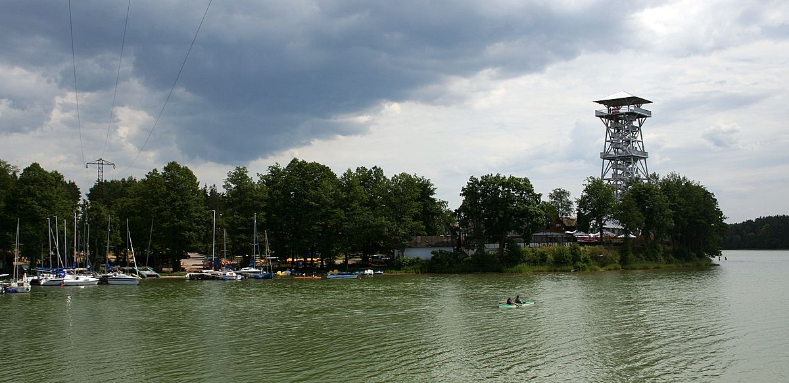
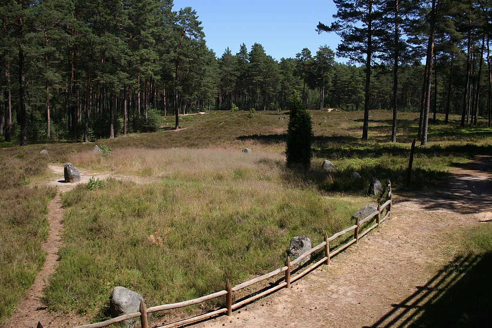
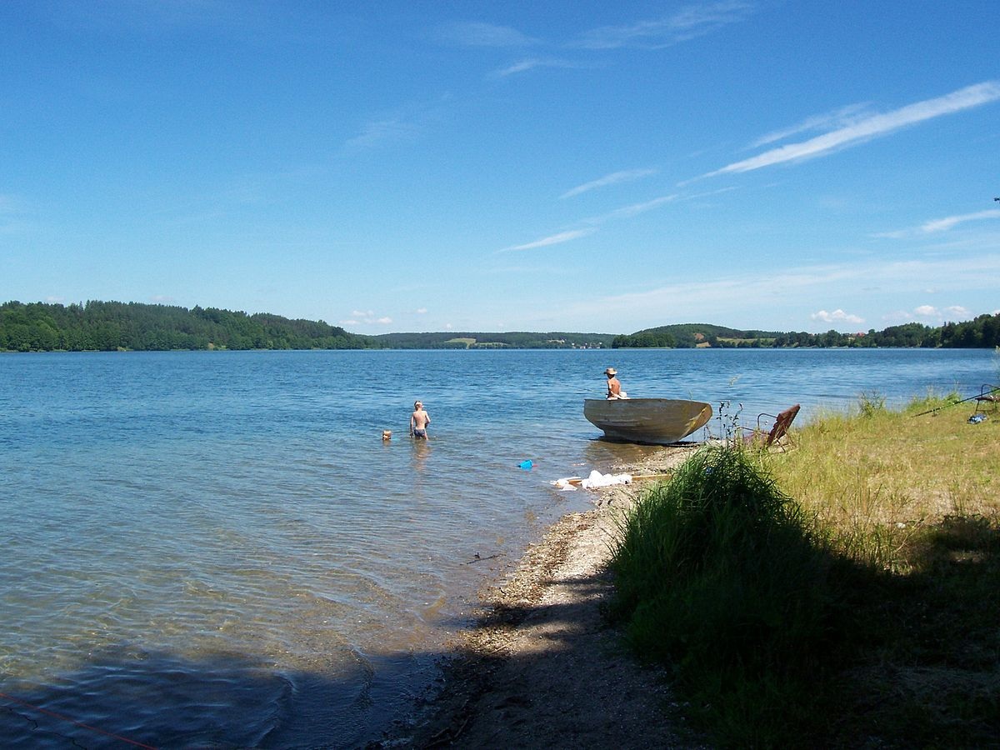

Dane o powiecie
| Siedziba | Kościerzyna |
| Powierzchnia | 1166 km² |
| Populacja | 71 738 |
Dane kontaktowe starostwa powiatowego
| Telefon | +48 58 680 18 40 |
| Adres | ul. 3 Maja 9c 83-400 Kościerzyna |
| Strona | powiatkoscierski.pl |
Atrakcje turystyczne
Wdzydzki Park Krajobrazowy
Obejmuje jezioro Wdzydze i kilka mniejszych jezior otoczonych borami. Leśno-pojezierny obszar parku wyróżnia się nieprzeciętnym pięknem krajobrazu. Szata roślinna parku jest różnorodna i dobrze zachowana. W pełni wykształcona jest roślinność wodna i torfowiskowa. Powierzchnia parku wynosi 178,32 km²
Źródło: wikipedia.orgRezerwat przyrody Kręgi Kamienne
Rezerwat obejmuje kompleks leśny o powierzchni 16,91 ha, na terenie którego znajduje się cmentarzysko plemienia Gotów – charakterystyczne kurhany i kręgi kamienne pochodzące z początków naszej ery.
Źródło: wikipedia.orgJeziora Raduńskie
 Zdjęcie ze strony wikipedia.org{kind=link}
Jeziora Raduńskie leżą w najbardziej atrakcyjnej krajobrazowo części Pojezierza Kaszubskiego, w tzw. Szwajcarii Kaszubskiej. Powierzchnią 7,37 km2 , długością prawie 10 km i głębokością maksymalną dochodzącą do 35 metrów przyciąga tu wielu turystów. Ważnym el. tutejszego szlaku wodnego jest rzeka Radunia, która przepływa na całej długości rynny jeziora.
Źródło: czystejeziora.pl